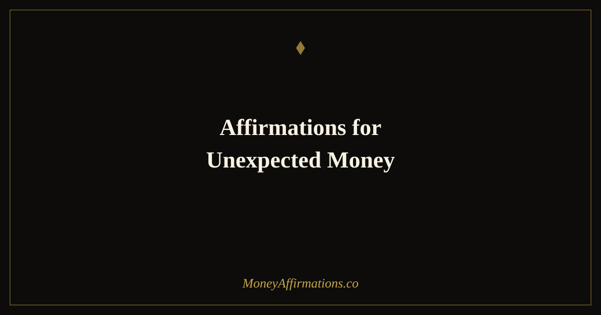

50 Affirmations for Unexpected Money to Open Yourself to Surprise Income

We are trained from an early age to expect money from predictable sources: a salary deposited on the same day every month, an invoice paid on agreed terms, a tax return that arrives in spring. This conditioning is practical — it helps us plan and budget. But it can also quietly close off the wider field of possibility. When we believe, deep down, that money can only come from the places we already know, we tend to stop noticing the channels through which it might otherwise flow. A forgotten refund sits unclaimed. An unexpected opportunity gets dismissed. A windfall arrives and is gone within days because we never treated it as real wealth.
These 50 affirmations are designed to widen those channels — to build a relationship with money that is open, receptive, and grateful for abundance in every form it chooses to take.
Most of us are trained to expect money only from known sources: salary, invoices, scheduled transfers. But money can arrive in any form — a refund you forgot about, an unexpected client referral, a gift, a discount that feels like a windfall. These affirmations widen the channels.
What are affirmations for unexpected money?
Affirmations for unexpected money are present-tense statements that dissolve resistance to receiving income from unfamiliar or unplanned sources. Unlike general abundance affirmations, they target the specific psychological barrier that makes people dismiss, waste, or feel undeserving of money that arrives without being earned in the conventional sense. They work on the unconscious stories that govern how we receive: the belief that windfalls are somehow less legitimate than salary, the guilt around gifts, the impulse to spend surprise income quickly because it does not feel "real." Used consistently, they create a genuinely open and receptive financial identity — one that welcomes every form of abundance with equal gratitude and wisdom.
50 affirmations for unexpected money
Opening to money you did not plan for (1–10)
- I am open to receiving money from sources I have not yet imagined.
- Money flows to me through expected and unexpected channels with equal ease.
- I release the need to know exactly how abundance will reach me.
- I am a natural and gracious receiver of all forms of financial good.
- The universe is always finding new ways to bring wealth into my life.
- I soften my grip on how things should arrive and welcome how they do.
- Surprise money is real money, and I receive it with full gratitude.
- My financial channels are wide open and always expanding.
- I do not limit the ways abundance can find me.
- I am pleasantly surprised by how often unexpected money arrives in my life.
For windfalls, gifts, refunds, and found money (11–20)
- I receive every windfall with gratitude and intention.
- I am grateful for every refund, gift, and unexpected payment that comes my way.
- Found money is a reminder that abundance exists in more forms than I track.
- I welcome every gift as a reflection of love and abundance flowing toward me.
- Money returned to me is a sign that the universe keeps its accounts.
- I treat every unexpected sum — however small — as meaningful and welcome.
- I am the kind of person who notices and celebrates all forms of financial surprise.
- Windfalls are not flukes — they are the natural result of my open, abundant mindset.
- Every refund and reimbursement I receive brings me closer to my financial goals.
- I am grateful for every penny that makes its way back to me, expected or not.
For opportunities that arrive without warning (21–30)
- I am awake to opportunities that arrive in unexpected forms.
- I say yes to new possibilities before I know all the details.
- Unexpected opportunities carry some of the greatest wealth I will ever build.
- I am positioned, mentally and practically, to act when surprise chances appear.
- I trust my instincts to recognise a genuine opportunity when it arrives.
- The doors I did not know existed are opening for me right now.
- I am grateful when life offers me something I was not expecting.
- Unplanned income streams have changed my life before and will again.
- I follow through on unexpected leads with the same commitment I bring to planned ones.
- My openness to surprise is one of my greatest financial strengths.
Receiving without guilt or suspicion (31–40)
- I am allowed to receive money I did not explicitly work for in the conventional sense.
- I release the belief that all income must be earned through struggle or predictable effort.
- Receiving a gift does not create a debt — it creates an opportunity for gratitude.
- I am worthy of abundance in all its forms, including the ones I did not earn.
- I let go of suspicion around easy money and welcome it with open arms.
- Unexpected income is not too good to be true — it is simply true.
- I receive well because receiving is a skill I have consciously developed.
- I do not diminish or dismiss money just because it arrived without a schedule.
- My worthiness to receive is not contingent on how hard I worked for each dollar.
- I welcome every form of financial blessing without apology or self-doubt.
Multiplying and circulating what arrives (41–50)
- I am a wise steward of every unexpected sum that comes to me.
- I use windfalls intentionally — saving, investing, or spending with purpose.
- Money that arrives by surprise grows when I give it a clear direction.
- I am the kind of person who puts unexpected income to work immediately.
- When money arrives in new ways, I respond with both gratitude and strategy.
- Unexpected money is a seed — I plant it where it will grow the most.
- I circulate abundance freely, knowing that what flows out always returns.
- I share a portion of every windfall, deepening the cycle of generosity and return.
- My relationship with unexpected money is one of gratitude, intention, and growth.
- I am always open to more, always grateful for what arrives, and always ready to multiply it.
How to use these affirmations
Read the full list once a day for two weeks to begin shifting your baseline expectation around money's channels. After that, use them situationally: whenever you receive an unexpected sum — no matter how small — pause and read three to five affirmations from the gratitude group before spending or transferring it. This brief ritual interrupts the impulse to treat windfall money as different from earned income and anchors a wiser response.
Keep the "receiving without guilt" group close if you tend to feel awkward accepting gifts or lucky money. Many people carry a deep belief that only money earned through labour is legitimate. These affirmations directly address that story. For the opportunity-recognition group, try reading affirmations 21–30 each morning for a week and notice whether you begin to spot income possibilities you would previously have dismissed or overlooked. The mind is a powerful filter — set it to wide, not narrow, and you will begin to see what was always there.
The psychology of windfalls — why unexpected money is so easy to waste (and how to change that)
Richard Thaler's mental accounting theory explains one of the most consistent patterns in personal finance: people treat money differently depending on where it came from. Earned income tends to be treated carefully — it was hard to get and goes into the regular budget. Unexpected income, however, is frequently assigned to a psychological "windfall account" where it is spent far more freely and quickly than equivalent amounts of earned money. A study by Hal Arkes and colleagues confirmed that windfall gains are indeed spent at higher rates than earned income, regardless of amount.
Hedonic adaptation also plays a role. Unexpected money feels exciting in the moment, which triggers spending behaviour designed to prolong or extend that feeling. The result is that thousands of dollars in windfalls, refunds, and gifts pass through people's hands each year with very little lasting impact on their financial position.
There is also a personality dimension to this. Research on openness to experience — one of the Big Five personality traits — shows that people who score higher in openness are more likely to notice and pursue novel income opportunities. Affirmations that cultivate openness and receptivity are, in this sense, doing more than shifting mindset: they are developing a trait that has measurable connections to financial opportunity recognition.
The shift these affirmations create is practical as well as psychological: treating all money — expected or not — with equal intention and gratitude means every dollar gets a direction, not just the predictable ones.
Tips to make them work faster
- Notice everything: Train yourself to register every unexpected financial event — a cashback reward, a price drop, a found coin. Each small act of noticing reinforces the receptivity these affirmations build.
- Pause before spending: When unexpected money arrives, give yourself 24 hours before deciding what to do with it. Read the stewardship affirmations (41–50) during that window to set an intentional tone.
- Journal the arrivals: Keep a simple log of every unexpected sum that comes to you. Reviewing this list monthly reveals patterns of abundance that would otherwise go unnoticed and unappreciated.
- Release the "source filter": Practise releasing the habit of judging money by how it arrived. Abundance is abundance — the universe is not keeping track of which channel you deserve to receive it through.
- Pair with action: Open yourself to receiving by also making yourself visible. Update a profile, reach out to an old contact, list something for sale. Openness in mindset combined with openness in action accelerates results.
Frequently asked questions
How can I attract unexpected money?
Attracting unexpected money involves a combination of practical openness and mindset work. Practically, it means staying visible, saying yes to new opportunities, following up on old leads, and noticing overlooked income streams like unclaimed refunds or unused subscriptions to cancel. Mindset-wise, it means releasing the belief that money can only arrive in familiar, scheduled ways. Affirmations help rewire that expectation so you notice and act on opportunities you might previously have dismissed or missed entirely.
Is it realistic to expect surprise income?
More realistic than most people assume. Unexpected income includes tax refunds, overpayment refunds, freelance referrals, price drops on items you already purchased, inheritance, gifts, bonus payments, uncashed checks, and money from selling things you no longer need. Most people receive some form of unexpected income every year without framing it that way. These affirmations help you notice, welcome, and make better use of what is already arriving.
What counts as unexpected money?
Anything that arrives outside your expected income schedule counts. This includes refunds, cashback rewards you forgot about, a client paying an old invoice, a gift from a friend or family member, selling an item you no longer use, winning a small competition, a bonus at work, a found note in an old coat, or a price adjustment credit. The psychological shift these affirmations create is about widening what you consider "income" — and responding to all of it with gratitude and intention rather than dismissing it as trivial.
These affirmations pair beautifully with the abundance affirmations collection, which explores the full spectrum of open, receptive money mindset work. For more on letting money flow toward you from all directions, the companion post on money comes to me easily offers another powerful set of affirmations for effortless financial flow.